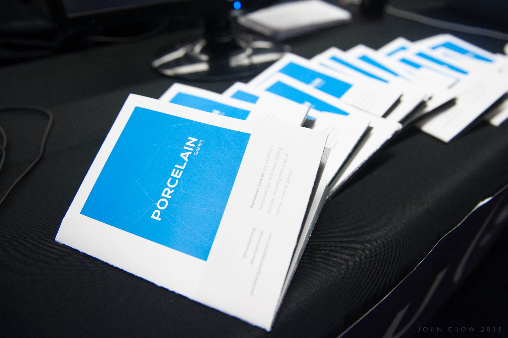
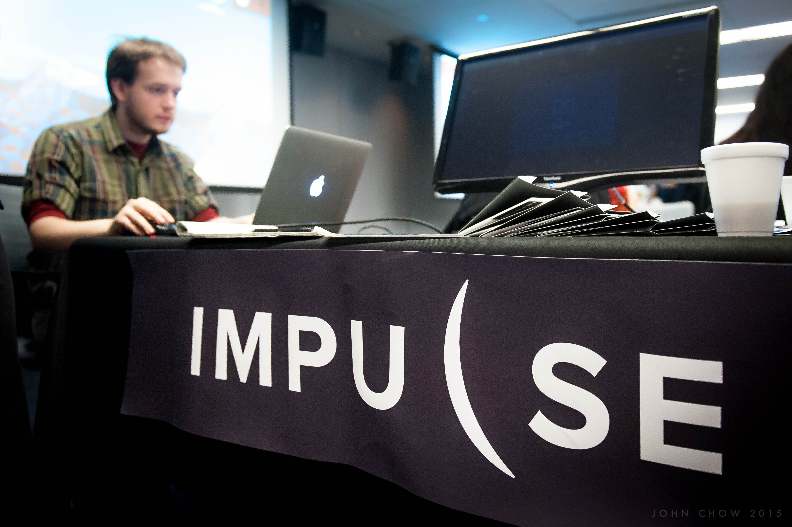

Photos by John Chow
When I ran across the Playcrafting Boston Expo online, it almost seemed too good to be true. Unlike certain other expos, which can cost thousands of dollars, this one was completely free for presenters.
Only one problem: it was a week away. I hurriedly wrote an e-mail to the organizer, and he got back to me the next day.
I was pumped to show off Impulse. But we had only a few days to prepare, and I had never exhibited a game before.
After the initial excitement wore off, I started reading articles and figuring about what I wanted to get out of the expo. Here are the goals I came up with:
We only had a few days to get our marketing materials together, and we were starting from scratch. We wanted something memorable, and we toyed around with ideas like stickers and running a high score contest. In the end, Nichole nailed it with a slick pamphlet that folded out into a poster.
We also printed out a 48 x 12 banner which we hung on the tablecloth. Overall, our expenses came out to almost $200. Printing ain't cheap.
For our booth we kept the layout simple with two demo stations on opposite ends of the table. We also had a monitor that mirrored one of the demos, allowing spectators to watch people play Impulse. When people weren't playing, we would loop our game trailer on the monitor.
I was pumped to show off Impulse. But we had only a few days to prepare, and I had never exhibited a game before.
When the big day came, I was nervous but excited. I arrived an hour early so that I would have time to set up and meet other developers before the event began (like this guy). This also allowed me to snag a booth in a prime location.
When the attendees started coming in, the hours flew by. Happily, my booth was never empty, and at one point I even attracted a small crowd. Everyone was very friendly and kind, and the evening was wonderful. I met several game music composers from Berklee and learned that a successful Kickstarter is a great way to get your game Greenlit by Steam.
Overall, the response was very positive. Most of our players got very engaged, and a couple of people even said they were ready to buy the game!
Attending the expo gave us a huge motivation boost by letting us know that people were excited. We also got a ton of great feedback on our tutorial and initial difficulty curve.
Thanks to Playcrafting for an awesome event. Impulse's next appearance will be at Boston University's Day of the Devs. If you're in the Boston area, hope to catch you there!